Akamon Innovations — Sisäinen työkalu
Käyttöohje testikäyttäjille. Tässä ohjeessa käydään läpi kaikki toiminnot vaihe vaiheelta.
Työkalu koostuu kolmesta välilehdestä: ensin suunnittelet hinnoittelun, sitten simuloit myynnin etenemisen ja lopuksi seuraat salkun kannattavuutta.
Työkalu toimii suoraan selaimessa — ei asennuksia, ei kirjautumisia. Data tallentuu selaimen muistiin istunnon ajaksi. Muista viedä tulokset CSV- tai tulosta-painikkeella ennen selaimen sulkemista.
Luo myyntisalkku, valitse tuotetyyppi, syötä parametrit ja tarkastele katelaskelmaa eri skenaarioissa.
Sivun vasemmassa reunassa näet salkkuvalitsimen. Yksi salkku vastaa yhtä tuotetyyppiä.
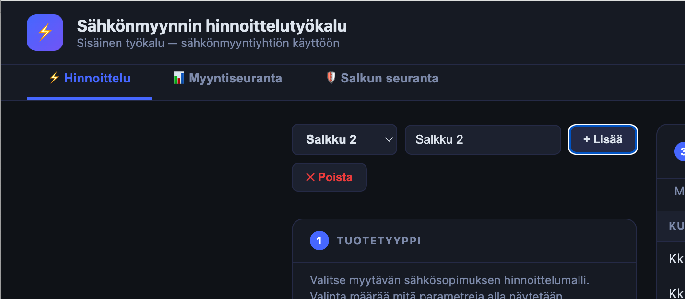
images/01-uusi-salkku.pngValinta määrää mitä parametreja alla näytetään.
Klikkaa haluamasi tuotetyyppi aktiiviseksi. Parametrikentät päivittyvät automaattisesti.
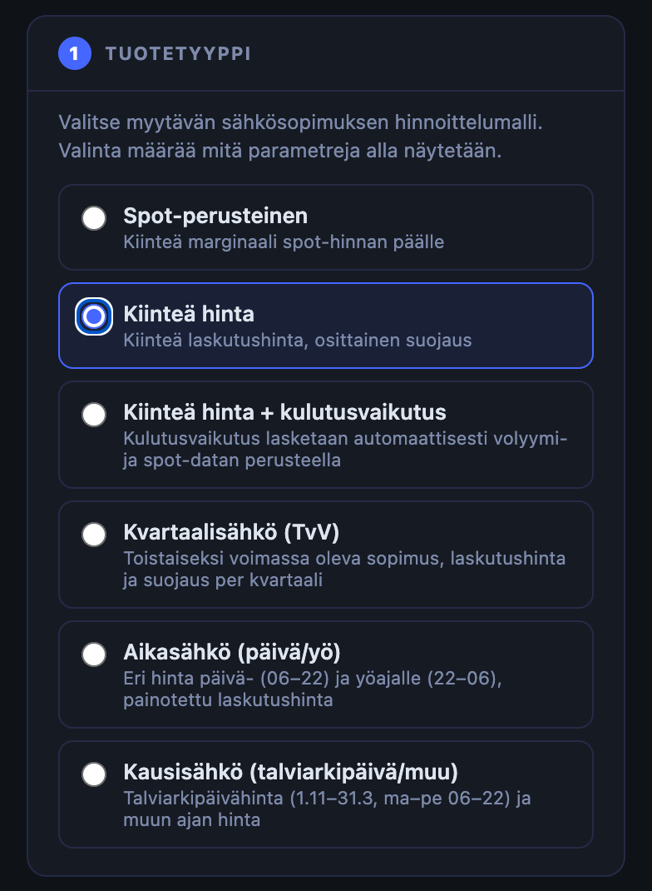
images/02-tuotetyyppi.png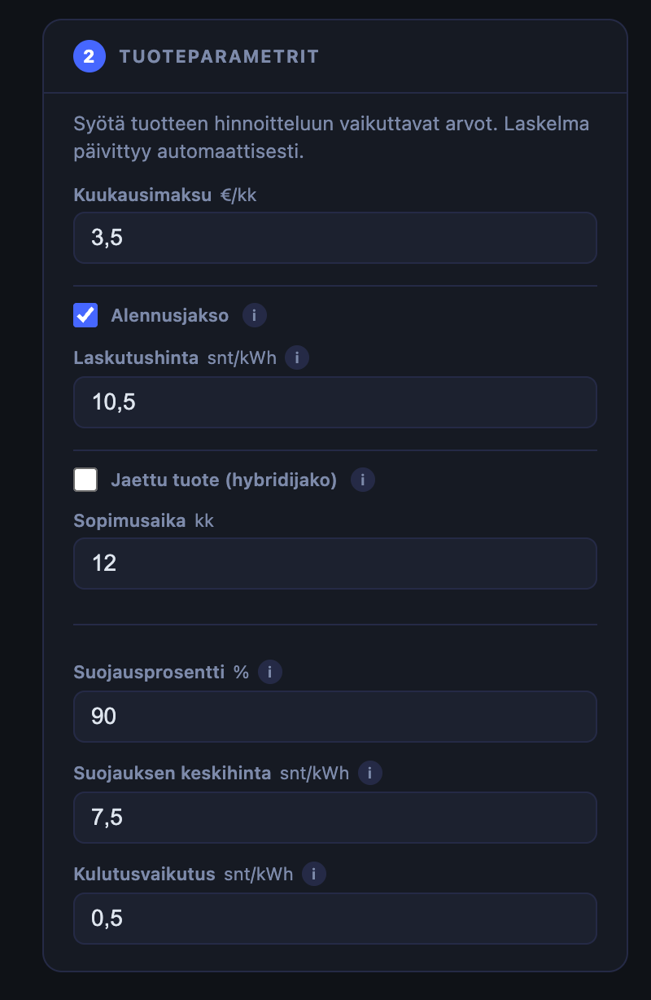
images/03-parametrit.pngKuukausitaulukossa näet volyymit ja spot-hinnat kuukausittain. Spot-hinnat täytetään automaattisesti historiallisilla keskiarvoilla lanseerauspäivän mukaan.
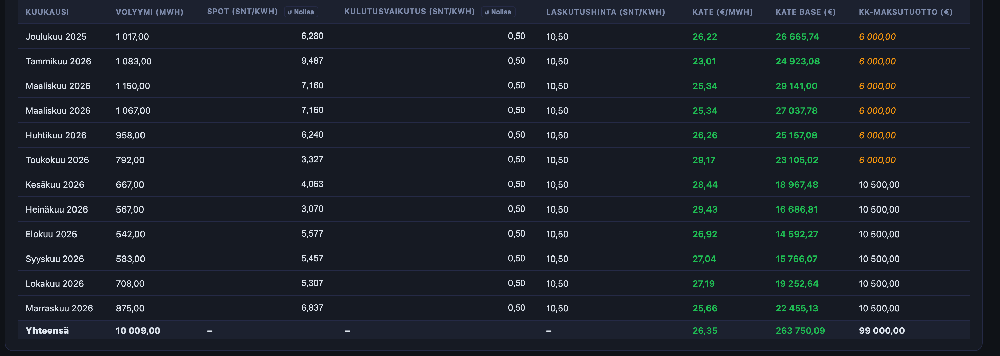
images/04-kuukausitaulukko.pngKPI-kortit näyttävät kokonaiskatteen base-arvona sekä min/max-arvot automaattisesti. Viuhkakaavio näyttää katteen epävarmuusalueen kolmelle riskille yhtä aikaa.
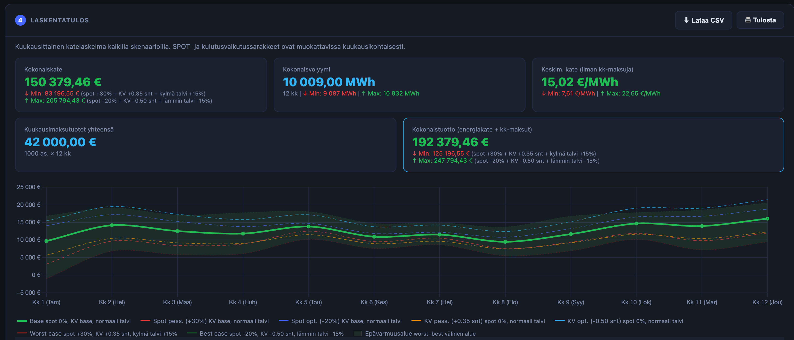
images/05-viuhkakaavio.png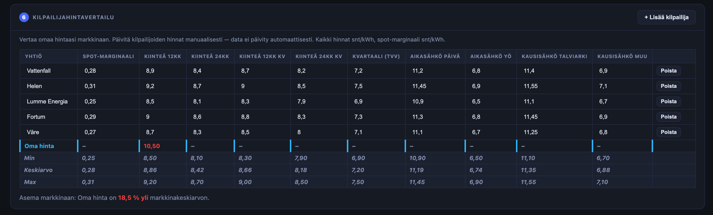
images/06-kilpailijat.pngSimuloi myynnin eteneminen ja tarkastele toteutunutta katetta suhteessa suunniteltuun.
Tarkastelupäivä määrittää missä kohtaa sopimuskautta "olet" — mikä näkyy toteutuneena ja mikä ennusteena.
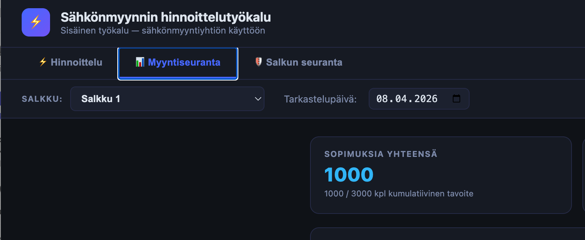
images/07-tarkastelupaiva.png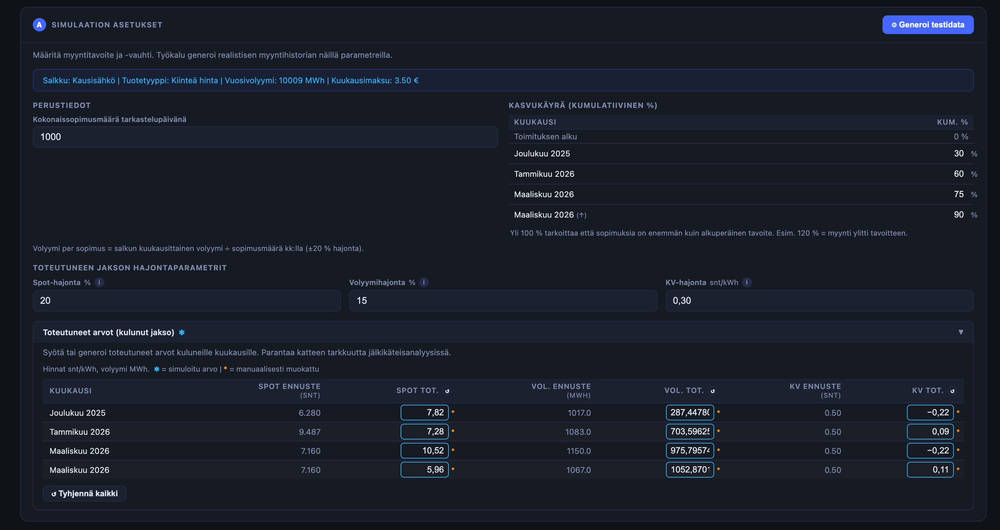
images/08-simulaatio-asetukset.png"Toteutuneet arvot" -taulukko näyttää simuloidut spot-hinnat, volyymit ja kulutusvaikutukset. Voit ylikirjoittaa minkä tahansa arvon oikealla datalla.
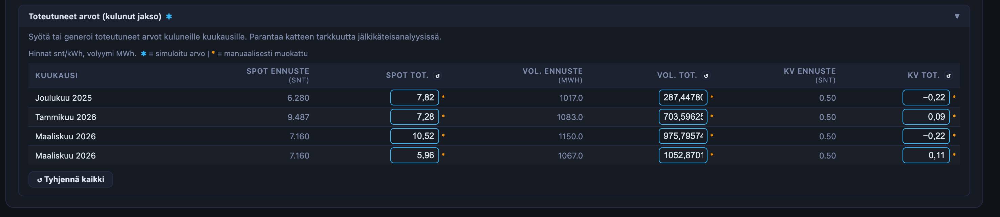
images/09-toteutuneet-arvot.png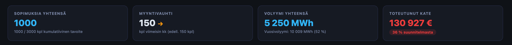
images/10-myyntitulokset.pngSeuraa salkun kokonaiskannattavuutta, suojauksen riittävyyttä ja avointa positiota.
Aikajana näyttää missä kohtaa sopimuskautta ollaan. Vasemmalla toteutunut jakso, oikealla ennuste.
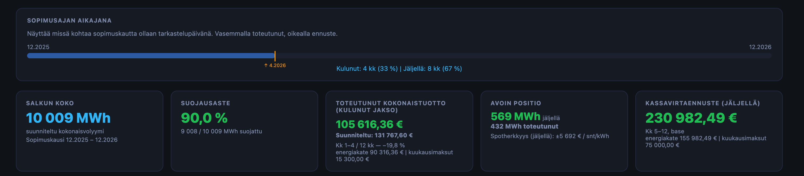
images/11-aikajana-kpi.png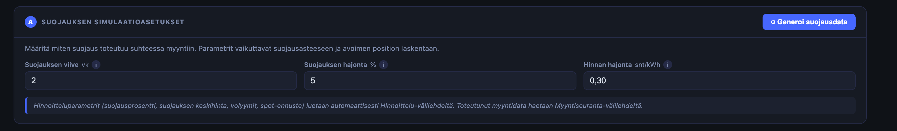
images/12-suojausdata.png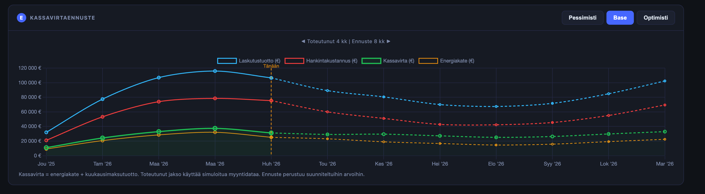
images/13-kassavirta.pngGraafi B:n alla kolme korttia vertaavat toteutuneita riskiarvoja hinnoittelussa käytettyihin ennusteisiin.
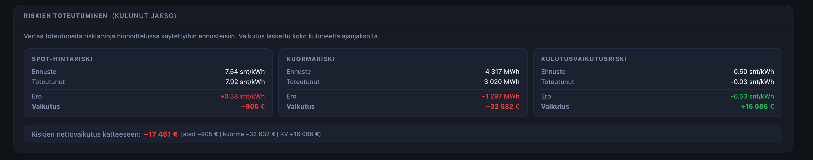
images/14-riskien-toteutuminen.pngKäytännön neuvoja ja vastauksia yleisimpiin kysymyksiin.
Työkalu tallentaa kaiken selaimen muistiin (sessionStorage). Data häviää kun suljet selaimen tai välilehden.
Erityisen arvokasta palautetta ovat:
Veli-Matti Laakkonen — veli-matti.laakkonen@akamon.fi — 050 573 3021